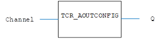
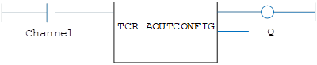

I/O Function.
Read the mode of operation for an analogue output.
|
Channel : INT; |
Analogue output channel number. |
|
Q : DINT; |
0 |
Bipolar, -10 V .. +10 V |
|
1 |
Unipolar, 0 .. +10 V |
|
|
2 |
Bipolar, -5 V .. +5 V |
|
|
3 |
Unipolar, 0 .. +5 V |
Read the mode of operation for an analogue output. This operation can be performed on any external analogue input from a Trio CAN Analogue input/output module P326 and P328.
This function requires CANIO firmware 2.3.2 or later.
The CAN analogue module P326/P328 has 4 x 12 bit outputs.
TCR_AOUTCONFIG (Channel);
Read the range of the analog output 5.
TC R _A OUT CONFIG ( 2 );


Not available.